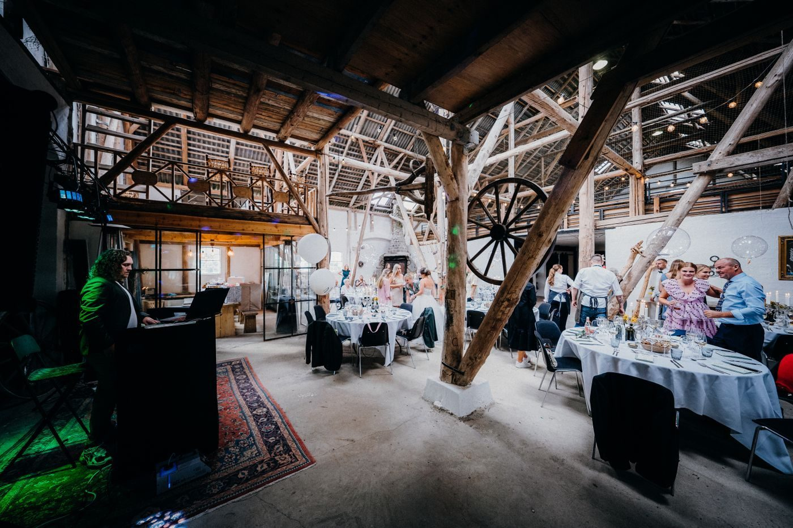

Visit John Black Photography
A photography studio in downtown Knoxville, for commercial, senior, family, wedding, headshot, and equine portraits.
Address: 1003 Oak Ave, Knoxville, TN 37921
Hours: Tuesday to Friday 10:00 AM to 6:00 PM, Saturday 10:00 AM to 3:00 PM. Sunday and Monday by appointment.
Sunday and Monday are by appointment only.
Phone: (865) 522-1715
Gallery



All gallery photos are stock photos, labeled as such. They show the kind of work and setting described on this page, not this business.
Contact
Call (865) 522-1715 Email john@johnblackphotography.com
John Black Photography serves Knoxville, TN. Questions? Call (865) 522-1715.